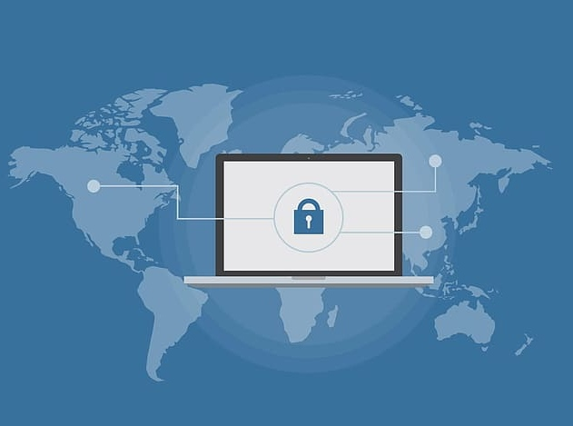

Phishing protection can be a tough nut to crack. There’s a seemingly endless number of phishing scams, each one trying to trick you into giving out personal information. From phishing emails to spoofed websites that try to fool you into entering information, malicious sites can trick you into giving away sensitive information that leaves you vulnerable to hackers.
Fortunately, there’s a wealth of software out there that can help you protect your business from phishing attacks. Experts have identified six main characteristics to look for in phishing protection software:
Your anti-phishing software should have the ability to see emails as people do but translate them into language that can be deciphered. To be totally and perpetually effective, your e-mail security software must be aware 24/7/365 of every type of risk from brand spoofing and spear-phishing to whaling.
In other words, your anti-spam software should be capable of detecting and blocking the most sophisticated techniques along with the constantly familiar issues associated with topics, such as spam.
Artificial intelligence is not all there is to email security. Make sure to look for a program that caps out at artificial intelligence algorithms with a strong comprehension of how email functions and is conscious of how email changes. That will enable the AI to continue learning, preventing the most recently deployed threats, including zero-day attacks.
Today's most dangerous phishing schemes work because they're exceedingly complex for humans to detect. That's why you ought to get a phishing solution that sees every little thing. It has to know how brands are supposed to appear, logos, color schemes, design standards, etc., so it could decipher emails down to the pixel and understand imposters by the tiniest of clues.
In addition, it must also have the ability to see invisible parts of an e-mail that only a computer can detect. Additionally, it should know your users' understanding of writing styles and practices to differentiate between hackers and impostors from your employees. Only then can you be sure to be protected.

It is one thing for your phishing solution to detect every threat that approaches you, it is another matter for it to work for normal people in real-time, every time. It cannot be the case that just your information technology group is responsible for email security.
You require your workers to do their jobs efficiently, which is why the perfect software to combat phishing should offer every user questioning guidance while gently but persistently hinting at the suspicious activity. Clear and reliable information delivered unobtrusively permits you to teach your employees how to prevent phishing attacks.
The solution does not need to be tied to a specific kind of computer or OS. It must work on every device you use to access your emails. You should be able to do so from any device, and the solution should also be easy to deploy and use. It must be unobtrusive and non-intrusive so it will continue to work in the background without hindering your employee's workday.
Email protection is a perpetual difficulty, but it is possible to learn from it. The key to validating threats is that steady research and evaluation must be relentless, with no regard for what may lie ahead. The companies that know defending email is a job are so sophisticated that they augment their technology using crowdsourced research and evaluation.
An ideal phishing protection software solution will offer more than anti-phishing. It will block malicious URLs and websites, monitor all incoming traffic, monitor all attachments, and alert relevant parties about a potentially malicious request. An ideal solution will provide users with the ability to fully control their personally identifiable information while encouraging users to safeguard it.